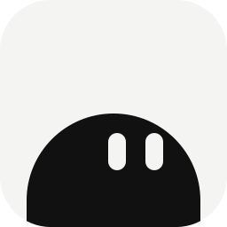
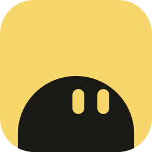
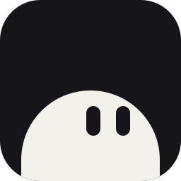
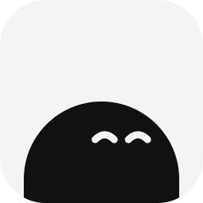
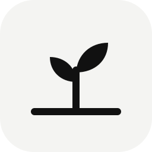
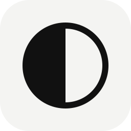

Every direction explored, shown as the real app icon at 150, 64, 32, and 16 px.

01 · PeekRemy peeks up from the bottom edge. Things show up on their day.

02 · Peek · butterSame character, one warm brand color.

03 · Peek · nightDark tile, light Remy. Matches dark mode.

04 · Peek · contentHappy closed eyes. Calm, “I’ve got it.”
Remy peeks over your to-do card, holding the edge.
Custom R whose leg turns into a check.
A calendar with ears and a smile.
A face whose smile is a checkmark.

09 · SproutA seed that sprouts on its day.
You say it, it becomes a note.

11 · Now & laterHalf filled, half waiting: today and later.
A ribbon that marks the day.